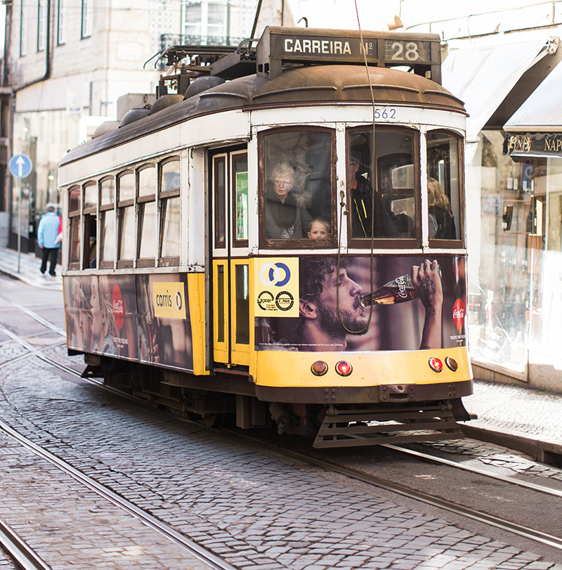
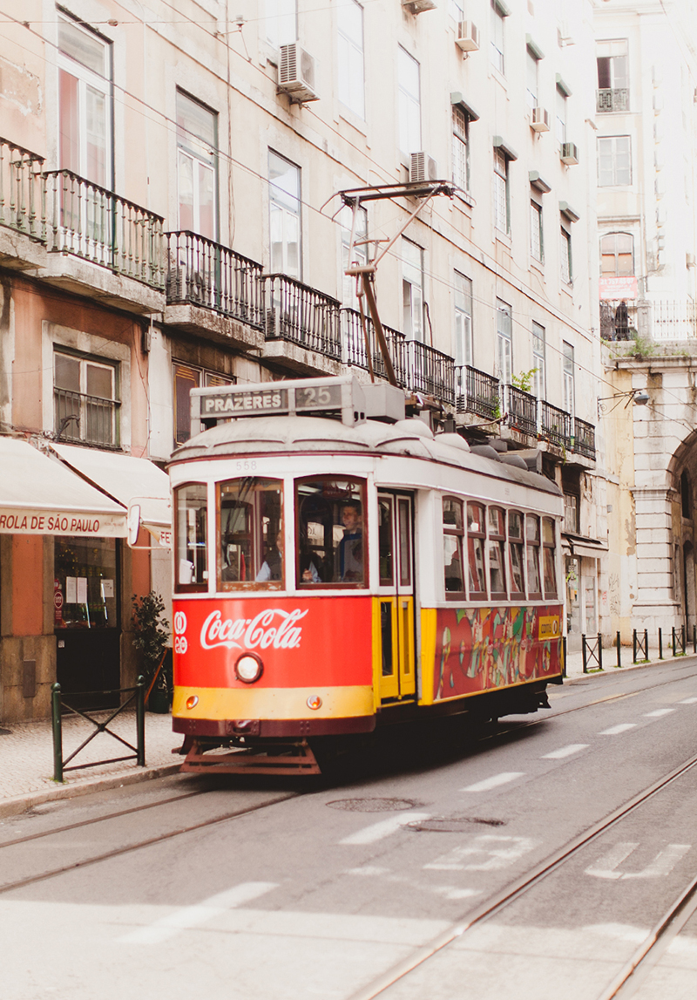

SEPTEMBER 22, 2016
You’ll often see Baixa and Chiado grouped together – they’re close enough to share a metro station, after all. The difference is that Baixa, which means ‘low’ is just that, a flat grid of streets at the base of Lisbon’s city centre. Read more
SEPTEMBER 18, 2016
The Metro in Lisbon is super simple to understand, and isn’t a massive network. However, it’s easy enough to wander around the centre and see lots without using the trains, and the beautiful old trams will take you where you need to go. Read more